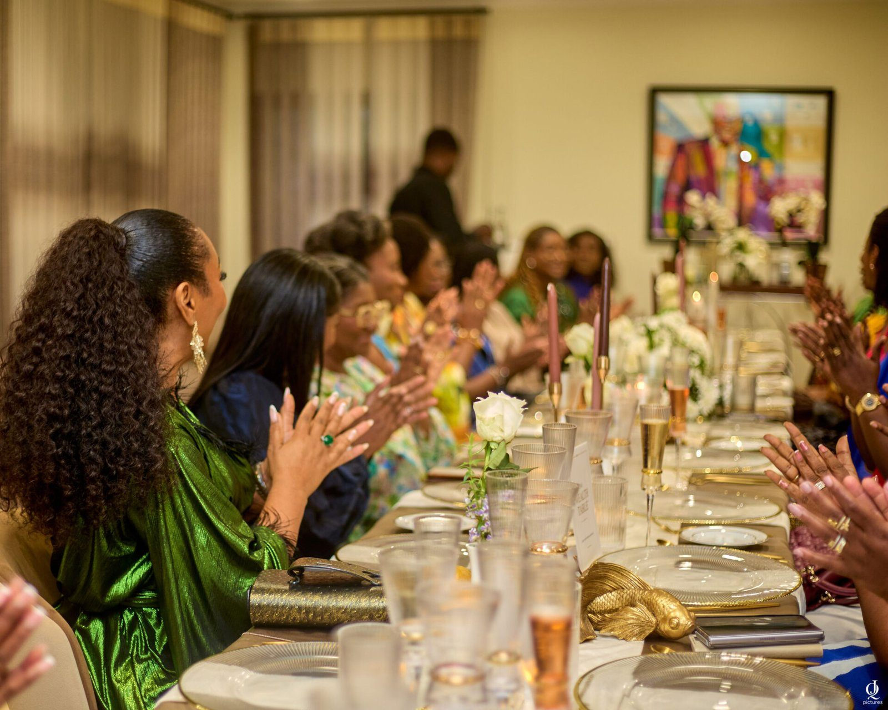
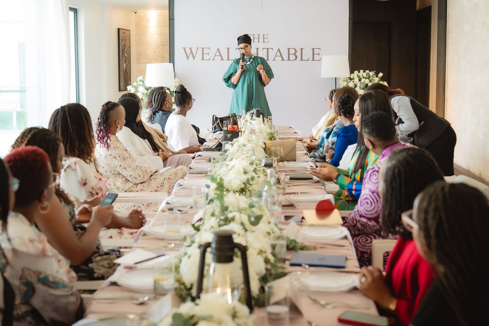
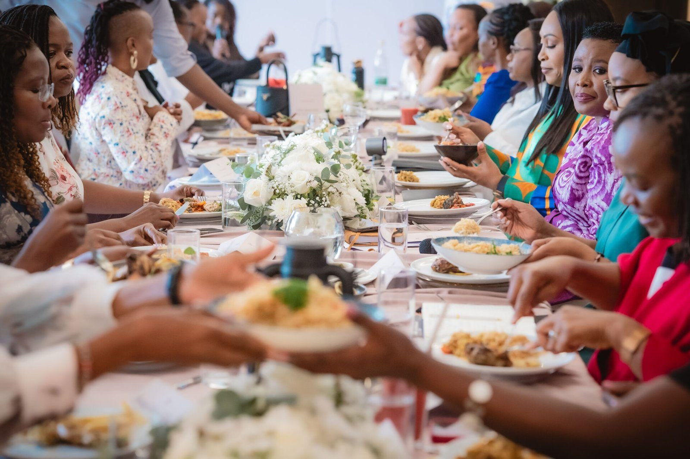

Concept 1
Warm Editorial
A giant serif wordmark across a photograph, pill buttons, numbered rows and one gold accent.
- Mainly from
- Mejuma Tuscany, La Caminera
- Type
- Instrument Serif + Inter Tight
- Colour
- Cream, burgundy, gold
- Navigation
- Menu pill that becomes a floating capsule, full-screen drawer

Concept 2
Quiet Gallery
One light serif at giant size, drifting image columns, an index of cities that swaps the picture, one burgundy surprise.
- Mainly from
- Jakobsen Copenhagen, La Caminera
- Type
- Cormorant Garamond only
- Colour
- Warm paper, ink, burgundy
- Navigation
- Text links either side of a centred wordmark

Concept 3 · the floating bar
Floating Bar
The compact glass bar from Ballena (outlined button, centred wordmark, two-line menu) that tints to each section, with whole-section colour changes and the waitlist docked into the hero.
- Mainly from
- Ballena Cabo, La Caminera
- Type
- Jost capitals + Instrument Serif italic
- Colour
- Cream, burgundy, navy, taupe
- Navigation
- 600 × 50 floating glass bar, overlay menu

Concept 4
Dark Serif
Thin capital Didone headlines with an indented second line, a scattered image cloud, a counted slideshow and a full-bleed closing panel.
- Mainly from
- Tengile MalaMala, La Caminera
- Type
- Bodoni Moda + Inter Tight
- Colour
- Deep burgundy-black, cream, gold
- Navigation
- Enquire · logo · Menu, slide-in panel